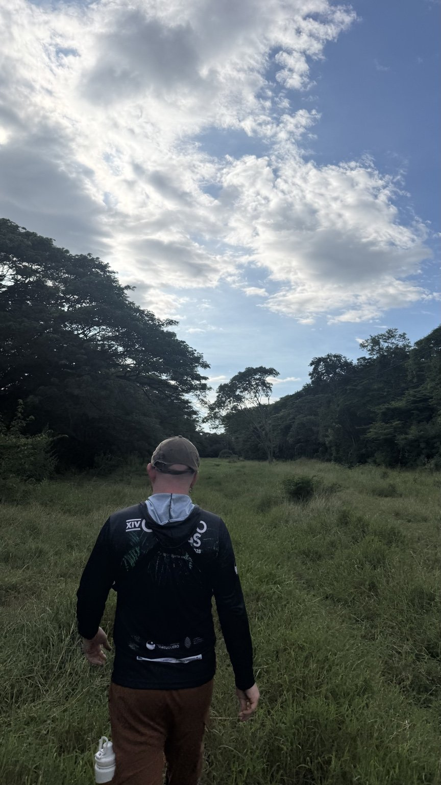
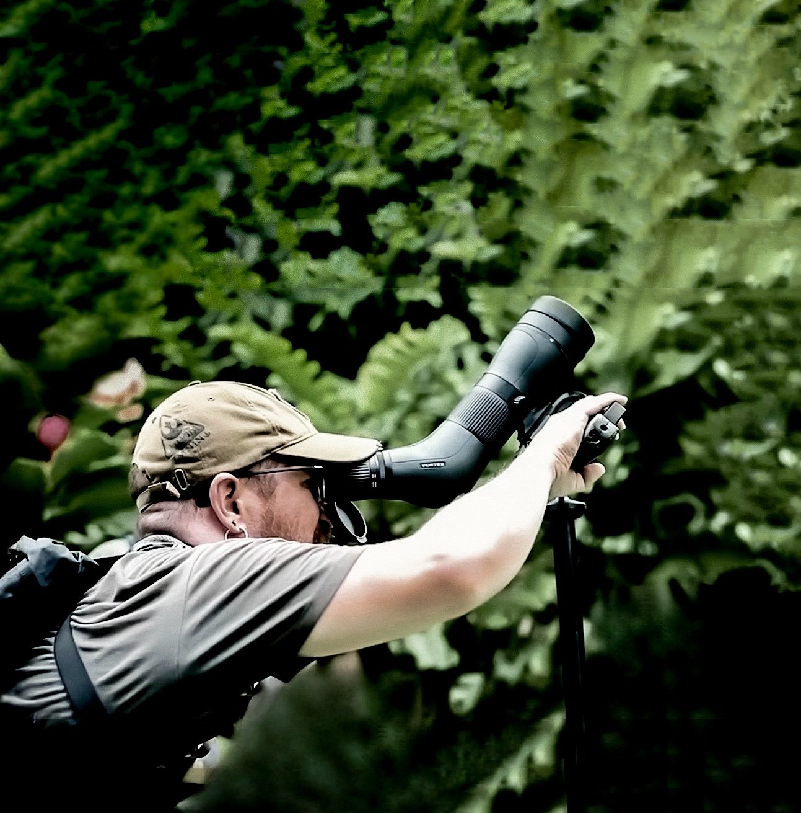
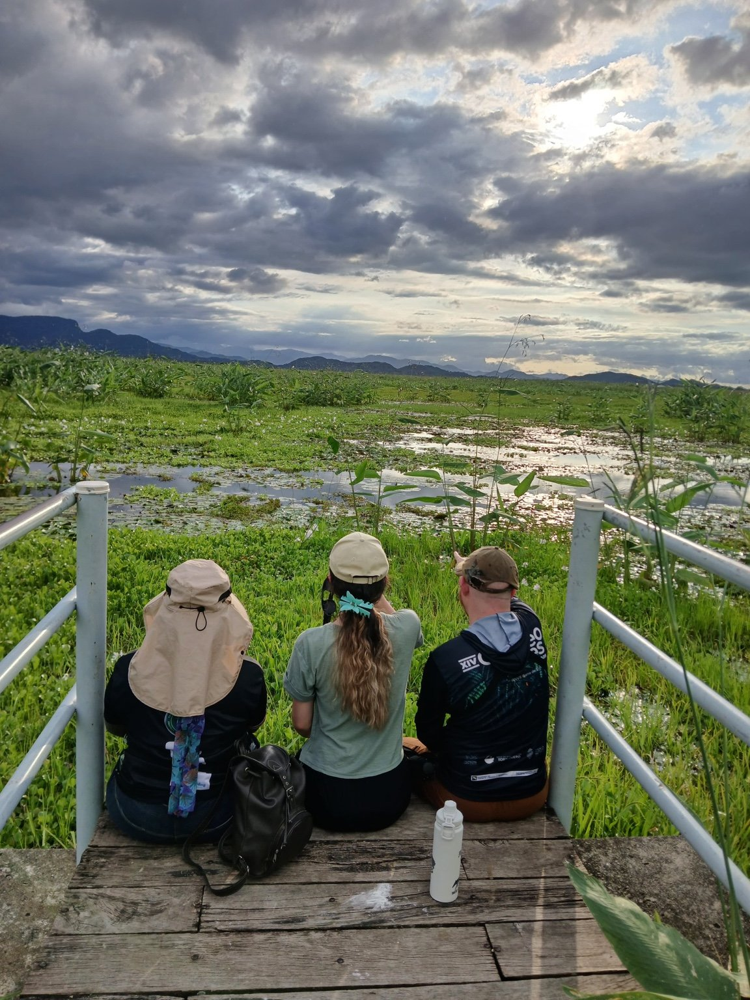

El país de las aves
Es un privilegio vivir en Costa Rica.
Las aves nos recuerdan constantemente que el mundo es más grande, más complejo y más maravilloso de lo que imaginamos.
Algunas especies migratorias recorren a lo largo de su vida el doble de la distancia que hay entre la Tierra y la Luna.
Muchas aves migratorias boreales llegan hasta Costa Rica antes de regresar al norte. Otras, migratorias australes, hacen aquí una escala antes de volver hacia el sur.
En ese ir y venir de alas que cruzan continentes, Costa Rica se convierte en un punto de encuentro.
Un pequeño país atravesado por rutas invisibles.
Un verdadero paraíso para la observación de aves.

La seducción
Una vez que uno se deja seducir por la observación de aves, el viaje nunca termina. Solo se detiene por momentos.
Lo que empieza como curiosidad pronto se convierte en una forma distinta de caminar por el mundo.
De pronto aparecen cosas que antes pasaban desapercibidas.
Un movimiento entre las ramas.
Un canto que se repite desde el bosque.
Una silueta cruzando el cielo.
Poco a poco uno descubre que pajarear no se trata solo de encontrar aves.
Se trata de aprender a mirar.
Aprender a mirar
Cada paso al salir a pajarear se convierte en un acto de atención.
Buscar movimientos, escuchar sonidos sutiles, detectar formas en el paisaje.
La naturaleza está llena de detalles esperando ser descubiertos.
Observar aves tiene una gratificación particular: saber que, tarde o temprano, una aparecerá.
Esa certeza le da a la búsqueda un ritmo especial. Uno camina atento, sabiendo que el próximo canto, el próximo movimiento entre las ramas o una silueta cruzando el cielo puede revelar algo.
Pero pajarear termina siendo mucho más que buscar aves.
Mientras uno observa, empiezan a aparecer otras cosas.
Las plantas que bordean el camino.
La forma de los árboles.
Los paisajes que se abren entre claros del bosque.
Otros animales que aparecen y desaparecen entre la vegetación.
El entorno entero comienza a revelarse con una claridad distinta.
Y algo también ocurre por dentro.
La mente se aquieta. Las preocupaciones se diluyen. Uno se siente parte del momento, parte del lugar.
Poco a poco, esa atención sostenida se convierte en una forma de conexión: con la naturaleza, con la vida, con el presente… con Dios.
La observación de aves nos enseña a escuchar las historias que la naturaleza susurra sin palabras.
Algunos secretos solo se revelan a quienes tienen la paciencia de observar en silencio… y la curiosidad de mirar dos veces.

El lenguaje del pajareo
El pajareo también tiene su propio lenguaje.
Quien ha salido al campo con otros pajareros lo reconoce de inmediato:
Ya no lo veo…
¡Ese es bueno!
¿Ese ya lo tiene?
Ahí hay algo.
Veo movimiento.
Llegó algo grande.
¿Te suena familiar?
La paciencia
A veces, la sabiduría de la lechuza no está en su vuelo, sino en el silencio de su espera.
En la oscuridad, en la quietud, aguarda. El momento adecuado siempre llega.
¿Cuántas veces la lechuza, desde su percha silenciosa, nos habrá visto pasar con nuestras linternas frenéticas… buscándola?
Las veces que no encontramos lo que buscábamos también tienen valor.
La frustración forma parte del proceso y le da más significado al momento del encuentro.
La paciencia es una virtud que se cultiva en la observación de aves.
La naturaleza tiene sus propios ritmos. Cuando estamos dispuestos a respetarlos, descubrimos que las mejores recompensas no están solo en lo que encontramos, sino también en el proceso de buscar.
La comunidad
La comunidad pajarera es un grupo diverso de personas unidas por una pasión común: la observación de aves.
Es un espacio lleno de curiosidad, atención al detalle y un profundo amor por la naturaleza.
He disfrutado mucho formar parte de esta comunidad y compartir el pajareo con personas de distintos lugares, pero con intereses profundamente afines.
Las giras y los tours se convierten en momentos especialmente valiosos. Son oportunidades para conocer gente, intercambiar historias… y, por supuesto, nerdear sobre aves.
Pero la comunidad también se construye en los caminos compartidos.
En los amigos pajareros que celebran con vos una especie nueva. En quienes te enseñan a reconocer un canto o te señalan un movimiento entre las ramas. En las conversaciones que empiezan hablando de aves y terminan hablando de la vida.
También están quienes caminan a tu lado en esta historia.
Karla, cómplice de madrugadas, giras y búsquedas improbables. Y Belle Vie, fiel compañere de rutas pajareras, que ha llevado y llevará estos binoculares por montañas, humedales y bosques de todo el país.
Porque el pajareo rara vez es una aventura completamente solitaria.

Prepararse para pajarear
Prepararse para un conteo de aves no se trata solo de llevar el equipo adecuado.
También se trata de entrar al campo con el cuerpo, la mente y el corazón dispuestos.
Cada prenda que protege del clima. Cada pieza de óptica que permite ver más lejos.
Todo se convierte en una extensión de la conexión con el entorno.
Mirar distinto
Algunas plumas no tienen pigmentos que generen su color.
En realidad contienen microestructuras que interactúan con la luz y producen colores a través de un fenómeno llamado coloración estructural.
Eso es lo que genera los tonos iridiscentes que cambian según el ángulo, como en muchos colibríes o en el quetzal.
De forma similar, la vida puede verse distinta dependiendo del ángulo desde donde se mire.
A veces, encontrar el color y la belleza requiere simplemente cambiar la perspectiva.
Una pregunta
¿Será que los pajareros envidiamos algo de las aves?
Quizás no las envidiamos.
Quizás solo queremos aprender de ellas.